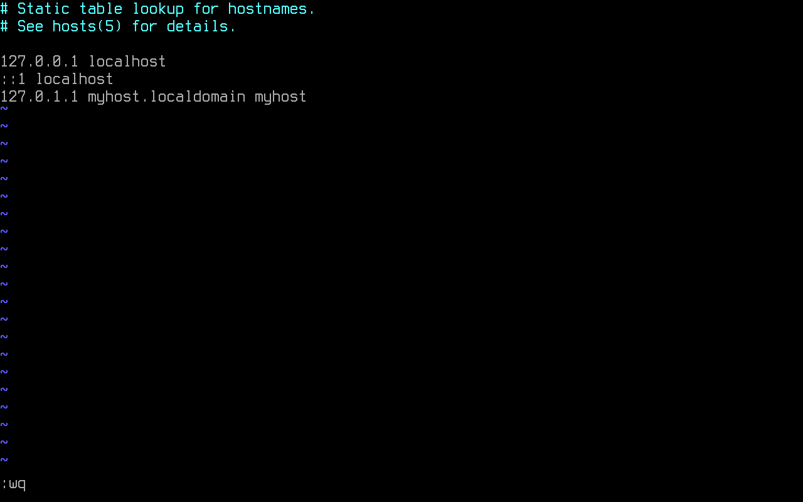
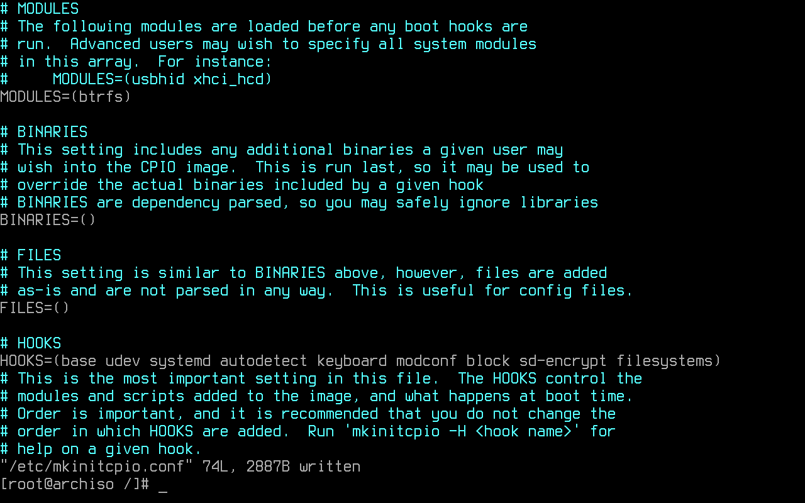
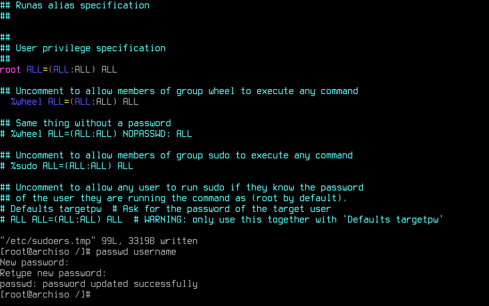
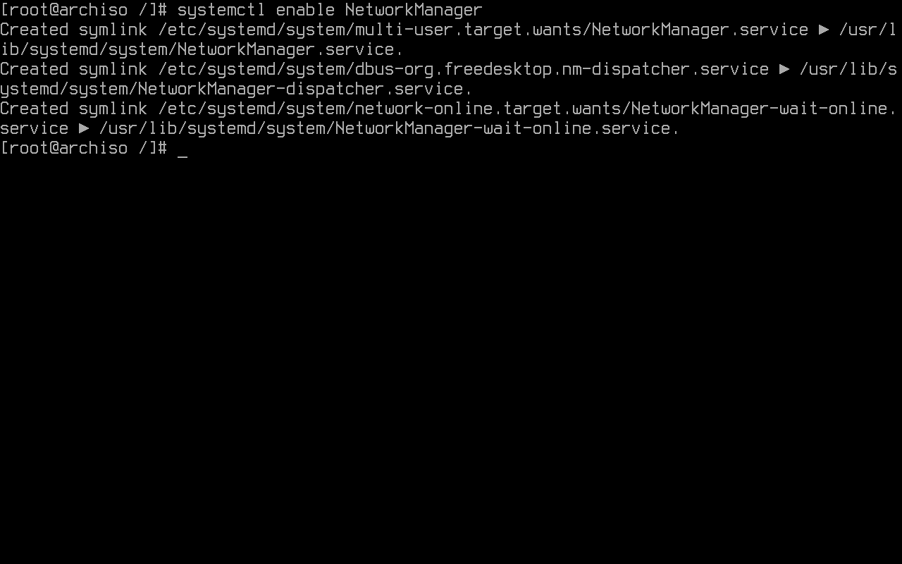
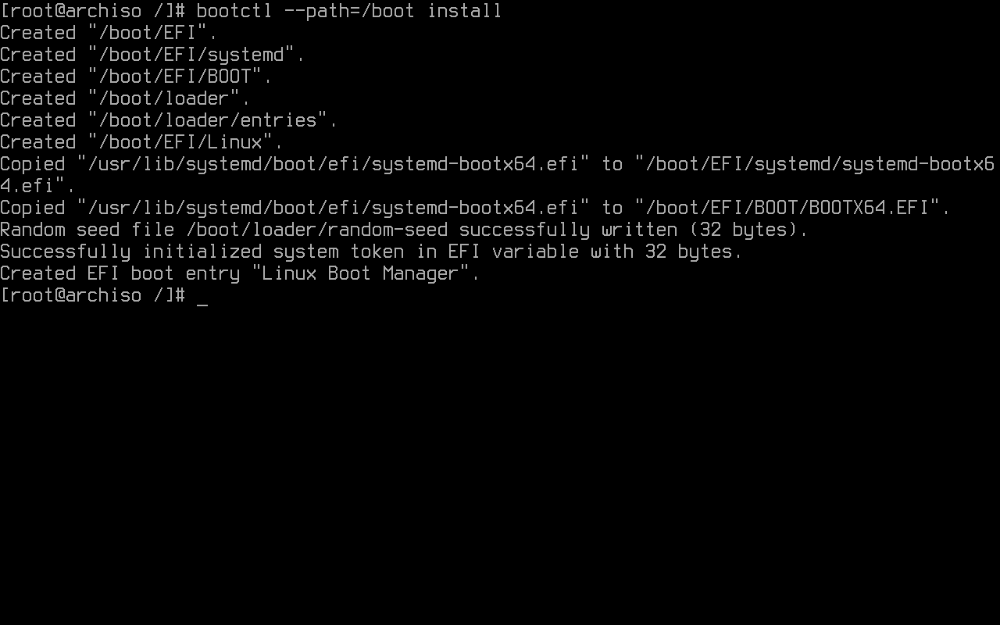
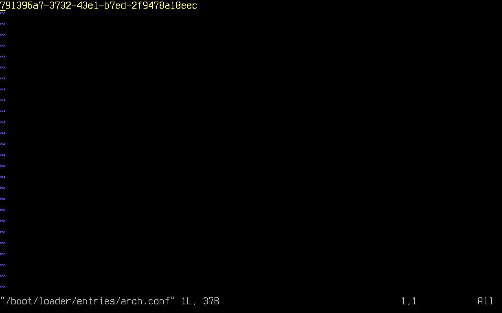
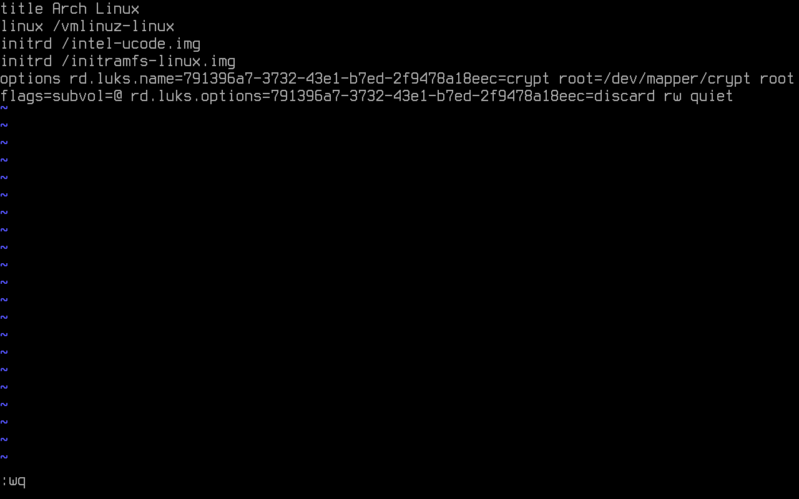
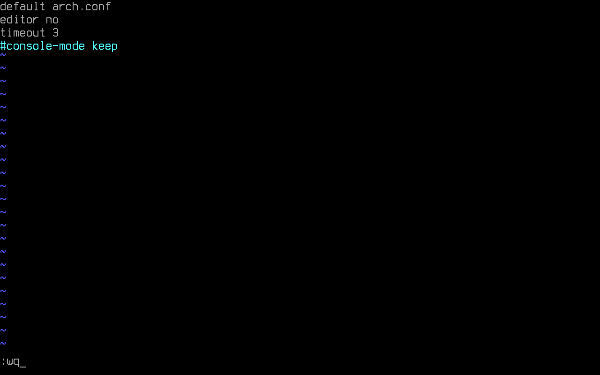
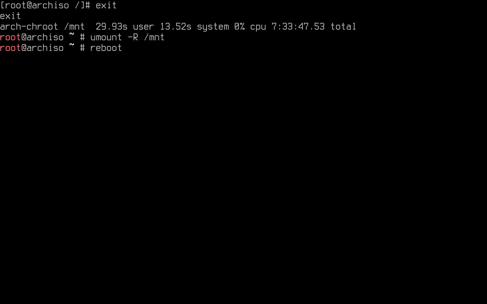

Barebones
Installation
Mirrors selection
Packages are downloaded from mirror servers. Reflector updates the mirror list by 20 most recently synchronized HTTPS mirrors and sorting them by download rate after connecting to the internet on the live system.
The higher a mirror is placed on the list, the more priority it is given when downloading a package. Usually, the one generated on the live system is fine. If not, it may be edited.
Essential packages installation
Pacstrap is designed to create a new system installation from scratch. It is used to install specified packages into a given directory after setting up the mountpoints defined before (specifically into the root partition):
-
base: Minimal package set to define a basic Arch Linux installation -
base-devel: Basic tools to build Arch Linux packages. It is useful to compile packages from source. More of this after getting a solid system. -
linux: The Linux kernel and modules. There are various alternative Linux kernels available for Arch Linux in addition to the latest stable kernel. It is still suggested to use the vanilla one. -
linux-firmware: Firmware files for Linux. -
btrfs-progs: Btrfs filesystem utilities. -
intel-ucode: Microcode update files for Intel CPUs. These provide bug fixes that can be critical to the stability of your system. All users with an AMD or Intel CPU should install the microcode updates to ensure system stability. -
vim: Vi Improved, a highly configurable, improved version of the vi text editor. More of this program later on.
System configuration
Fstab
The fstab file can be used to define how disk partitions, various other block devices, or remote file systems should be mounted into the file system. A fstab file is generated with:

Chroot
A chroot is an operation that changes the parent root directory for the current running process and their children. The following command changes root into the new system:
TIme-zone
By running the following command, an /etc/localtime symlink that points to a zoneinfo is created. If the user's
time zone name is unknown, it is recommended to play around by looking at the zoneinfo directory content (e.g.
ls /usr/share/zoneinfo/) to see which option is best suited. Replacing Region and City is necessary:
Hwclock is an administration tool for the time clocks. The following command sets the Hardware Clock from the System Clock and updates the timestamps found in /etc/adjtime:
Localization
To make use of the English language in the system, en_US.UTF-8 UTF-8 found in /etc/locale.gen must be uncommented:
By using echo, it is possible to edit/create a file without having to use a text editor. This command creates a locale.conf file and sets the LANG variable to the same uncommented above:
The locales are generated by running:

(Optional) Persistent keyboard layout
A persistent console keyboard layout can be specified by writing it on /etc/vconsole.conf. On the next
example, the Latin American layout is chosen:
Network configuration
The following command creates the hostname file an adds the system's hostname.
In this example, myhost is the hostname:
Nss-myhostname provides localhost and the local hostname resolution to an
IP address. Still, some software may instead read /etc/hosts directly. To prevent such software from unsafely resolving
localhost over the network, entries for localhost are added. Resolving the local hostname is allowed by adding it too:
The following text must be added to the file:

A configuration for a system with a permanent IP address or a domain name can be done too, but this won't be covered in this guide.
Initramfs
The mkinitcpio.conf file must be edited, adding btrfs for it must be loaded before any boot hook.
Inside HOOKS, base udev systemd autodetect keyboard modconf block sd-encrypt filesystems is added.
-
base: provides crucial runtime necessities for booting. -
udev: adds the udev daemon to the initramfs, allowing for dynamic loading of modules and reliable detection of the root device via tags (UUID). -
systemd: installs a basic systemd setup in the initramfs, and is meant to replace thebase,usr,udevandresumehooks. Other hooks with runtime components will need to be ported, and will not work as intended. Includingbasehook before this one to ensure that a rescue shell exists on the initramfs is a good idea. -
autodetect: shrinks the initramfs to a smaller size by autodetecting the needed modules. -
keyboard: loads the necessary modules for keyboard devices. -
modconf: installs modprobe configuration files from /etc/modprobe.d and /usr/lib/modprobe.d. -
block: loads the necessary modules for most block devices using pata, sata, scsi, firewire, usb, or mmc. -
sd-encrypt: allows for an encrypted root device with systemd initramfs. -
filesystems: adds filesystems modules to the image.

The initramfs image is recreated:

Password creation
A root password is set:
User creation
With the following command, an user and the respective home directory is created. This user is wheel member.
Wheel is the administration group, commonly used to give privileges to perform administrative actions. Even
though it isn't the default, it can also be used to give access to the sudo
and su utilities. In the following example, username is the user's name:
The configuration for sudo is found in /etc/sudoers. It must be edited by using visudo.
Visudo locks the sudoers file against multiple simultaneous edits, performs basic validity checks, and checks for syntax errors before installing the edited file. This prevents any error that could make of sudo inoperable.
The default editor for visudo is vi. To establish vim as the visudo editor for the duration of the current shell session, EDITOR=vim is written before visudo:
%wheel ALL=(ALL) ALL is uncommented to allow members of group wheel to execute any command:
It is highly advised to set a password for the created user:

Using pacman, the following packages are installed:
-
linux-headers: Headers and scripts for building modules for the Linux kernel. -
networkmanager: Network connection manager and user applications. -
dialog: A tool to display dialog boxes from shell scripts. -
wpa_supplicant: A utility providing key negotiation for WPA wireless networks. -
mtools: A collection of utilities to access MS-DOS disks -
dosfstools: DOS filesystem utilities. -
git: The fast distributed version control system. -
xdg-utils: Command line tools that assist applications with a variety of desktop integration tasks. -
xdg-user-dirs: Manages user directories like~/Desktopand~/Music.
pacman -S linux-headers networkmanager dialog wpa_supplicant mtools dosfstools git xdg-utils xdg-user-dirs
The main command used to introspect and control systemd is systemctl. Some of its uses are examining the system state and managing the system and services. The following command enables NetworkManager to start automatically at boot:

Bootloader
Systemd-boot as bootloader
A bootloader is a piece of software started by the firmware. It is responsible for loading the kernel with the wanted kernel parameters and any external initramfs images.
This guide uses Systemd-boot. It is a pretty straight-forward boot manager. It is already included with Arch's init system, Systemd.
Bootctl is used to install systemd-boot to the EFI
System Partition's (ESP) mountpoint. In this case, it is mounted to /boot, for separation of concerns
between OS and EFI related files is not wanted:

Systemd-boot searches for boot menu items. In this specific configuration, in /boot/loader/entries/arch.conf.
In order to use encryption, the root's UUID (Universally unique identifier) is used to identify such partition.
It is added to the file, so it is not necessary to manually copy all of those characters:

The file is then edited:
title Arch Linux
linux /vmlinuz-linux
initrd /intel-ucode.img
initrd /initramfs-linux.img
options rd.luks.name=<UUID>=crypt root=/dev/mapper/crypt rootflags=subvol=@ rd.luks.options=<UUID>=discard rw quiet

title: The Operating System name.linux: EFI program to start. Relative to the EFI System Partition.initrd: It is used to state kernel parameters.options: Options to pass to the EFI program or kernel parameters.
Since this is a linux only boot, linux can be used instead of efi. The syntax differs in both cases.
The loader configurations is found in /boot/loader/loader.conf:
The following configuration is added:

Reboot
It is required to type exit or press Ctrl+d to exit the chroot environment:
Even though it is not a must, the used partitions may be manually unmounted.
The following command restarts the machine:
